BIM Viewer
Building Information Modeling
Building Information Modeling (BIM) provides the information to make smart decisions throughout the entire lifecycle of a construction project. BIM improves the cooperation and coordination among the various stakeholders. With BIM, a building is first virtual and then physical. Actual construction begins only after the virtual building meets all expectations and requirements. During the operational phase, BIM ensures that the building continuously adapts to current requirements, remaining effective and efficient.
This section includes instructions on using the BIM Viewer. Information on procedures is available in the step-by-step section.
Integrating Desigo Building Automation and SiPass
The BIM Nodes GMS imported in Desigo CC can be easily linked to Desigo building automation and SiPass. Construction changes to the project, for example, subdividing rooms, can be GMS updated without additional engineering by reimporting the BIM data in Desigo CC. Any required changes to the application program for Desigo must, however, be made separately in this case with ABT Site.
What BIM Data is Required
A huge amount of highly detailed data volumes are generated when comprehensively planning with BIM. The scope can impact the performance of Desigo CC. As a consequence, we recommend setting the scope of data for import in advance in consultation with the general contractor. For example, for blinds in BIM, all slats (∽30) for a window are individually referenced. In Desigo CC, the position and angle are evaluated using a reduced number of slat objects (∽8) to simplify the graphical depiction.
BIM Glossary
Designation | Description |
Association | A link between the BIM object and Desigo CC. |
BIM | Building Information Modeling |
BIM object | An object in a BIM file. This can be: Walls, floors, windows, doors, etc., or room unit objects. |
BIM graphic | A Desigo CC graphic generated by importing a IFC file. |
BIM tool | A third-party engineering tool required to manufacture binary building models. The tool creates and manages all relevant data and architectural information. |
BIM Vision | A third-party visualization tool to display IFC models. There are multiple tools of this type on the market. We recommend the BIM Vision Tool (http://www.bimvision.eu). |
Revit | The most popular tool for planning buildings using BIM data. |
IFC file | An IFC file includes all building data (BIM models) in the standardized IFC format. The IFC format is used during export from the BIM tool and can then be imported with the Desigo CC BIM Viewer. |
Toolbar Operation of BIM Viewer
| Description | Screen display |
| Switches to edit mode |
|
| Switches to floor view if a room is selected. |
|
| Switches to the room view if a room is selected in the floor view. |
|
Displays the defined output state of the building. | 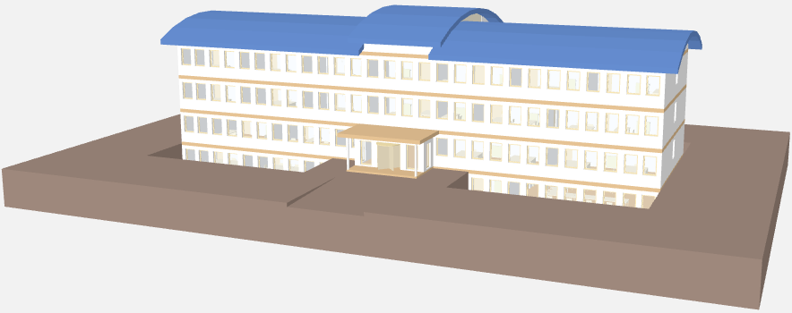 | |
| Displays the floor listed for navigation in Desigo CC that is generated from the BIM data. A corresponding color code is displayed when using room grouping. NOTE: The displayed floor names can differ from the system data. | 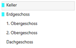 |
Displays two different camera positions. The camera position changes automatically when entering a room. |
| |
| The selected object is highlighted in color. The other equipment keeps the same color. | |
| All equipment for the selected room is highlighted in color. | 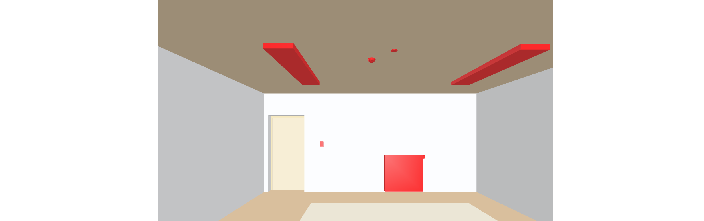 |
Red highlighted objects associate a data point and a BIM object . White objects are only available as data points, but not associated with a BIM object. 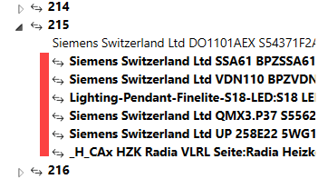 | 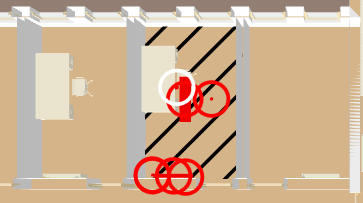 | |
| Various filters can be combined and used in edit mode. |
|
| Clear the filter settings if the filter dialog box is already closed.
|
|
| Displays the building in X-ray image. | 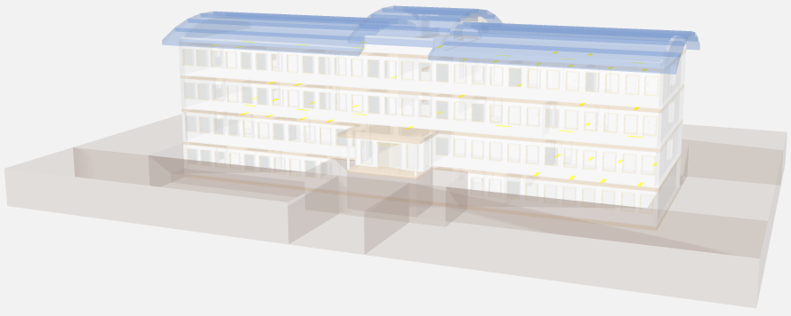 |
| Displays the room information for temperature and occupancy state. The selected room value display is displayed in the center of the room in red. | 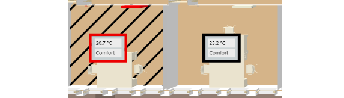 |
Opens the state and operating window on the graphic page with the main values. | 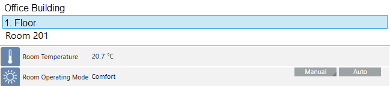 | |
| Opens the alarm list and displays the filtered alarms. Filter criteria are: Building, floor, or room. |
|
Opens the room grouping window. | 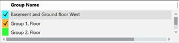 | |
Displays door state. | 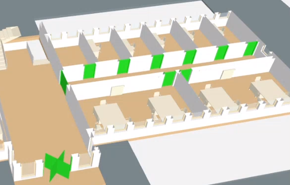 | |
| Displays the room events. Color code: |
|
| Displays the room temperature. Color code with gradient fill between: |
|
| Displays open windows. Color code: |
|
| Displays the room air quality. Color code with gradient fill between: |
|
| Displays the room humidity. Color code with gradient fill between: White 0% |
|
| Displays the room occupancy state as per the presence sensor. Color code: |
|
| Shows the room lighting state. Color code: |
|
| Displays the blinds state. The height of the blinds triangle corresponds to the height of the blinds (in %). The angle controls the transparency (0%: Fully transparent, i.e. no color; 100%: Full color) |
|
| Displays the data sheet for the selected organization in all available languages. The user must select the desired documentation language. Internet connection required for this URL function. | |
Displays the location of the building in Google Maps. | 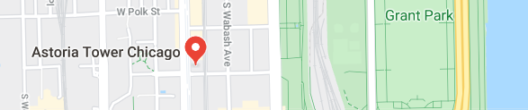 |